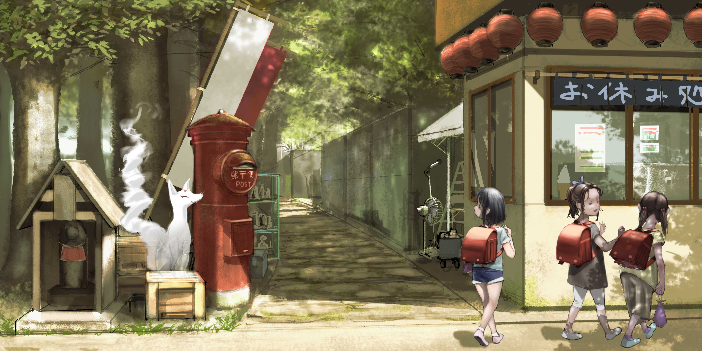

歴史をたどっていくと、昔の武将や出来事、残された記録に目を向けることが多くなります。
しかし、その時代を作ってきたのは、名を残した人たちだけではありません。
その土地で暮らし、日々を過ごしてきた人たちの記憶もまた、大切な歴史だと思います。
私にとってそれは、祖父・理（おさむ）から聞いた話や、 一緒に歩いた道、子どもの頃に過ごした昭和の日々でした。 岸岳のこと、オオト様のこと、昔から伝わる話。 それらは本や資料だけではなく、祖父の言葉や背中を通して、 私の中に残っています。
このページでは、昭和という時代の中で見た景色や、 今では少なくなった子どもたちの遊び、人とのつながり、 そして祖父から受け取った小さな記憶を書き残していきます。